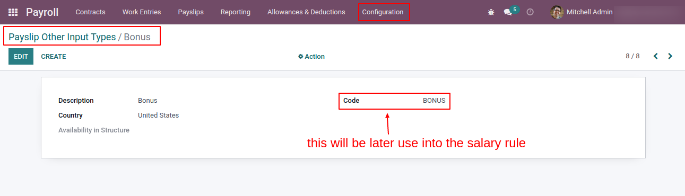
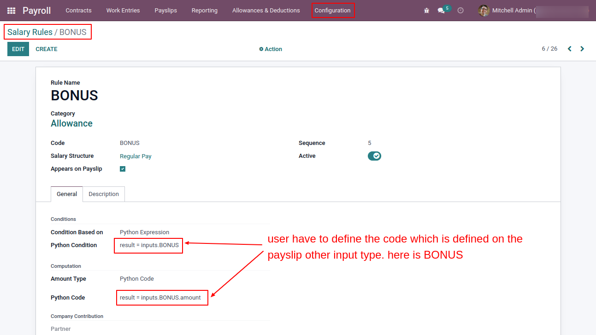
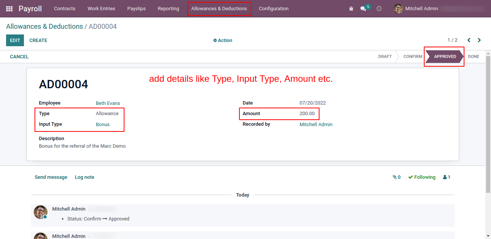
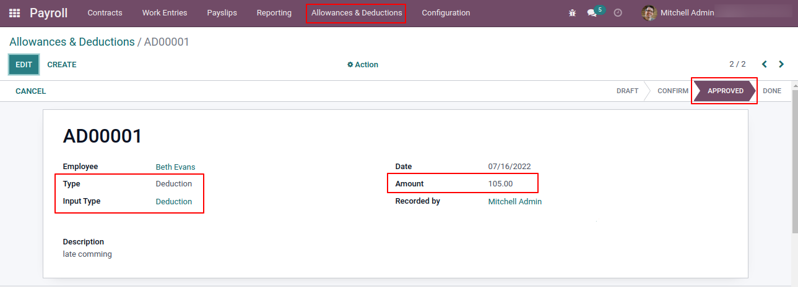
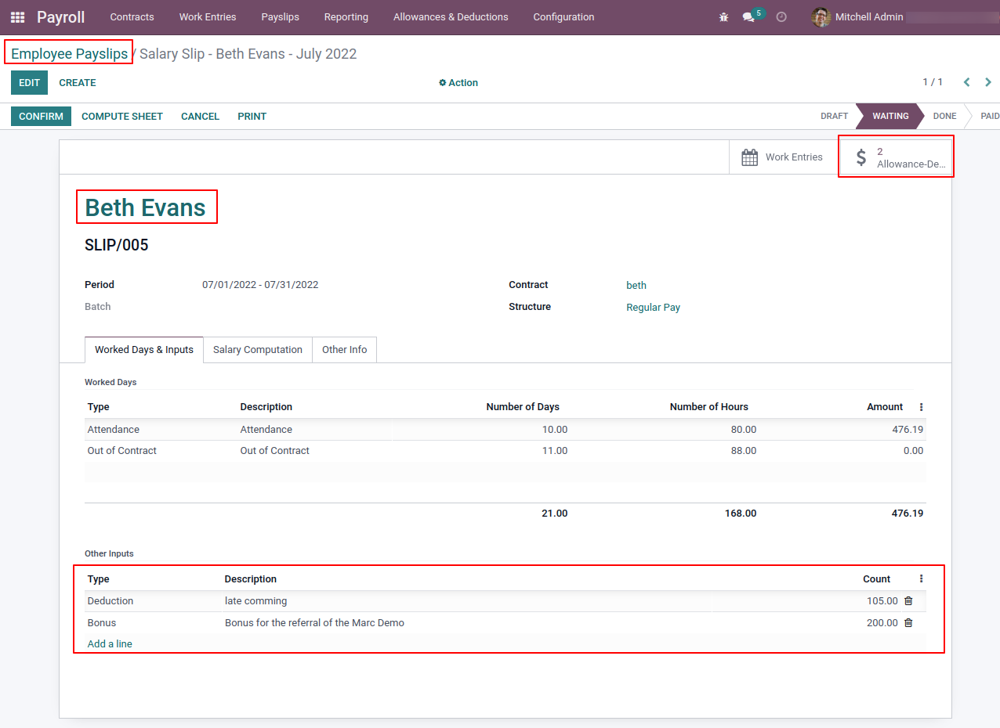
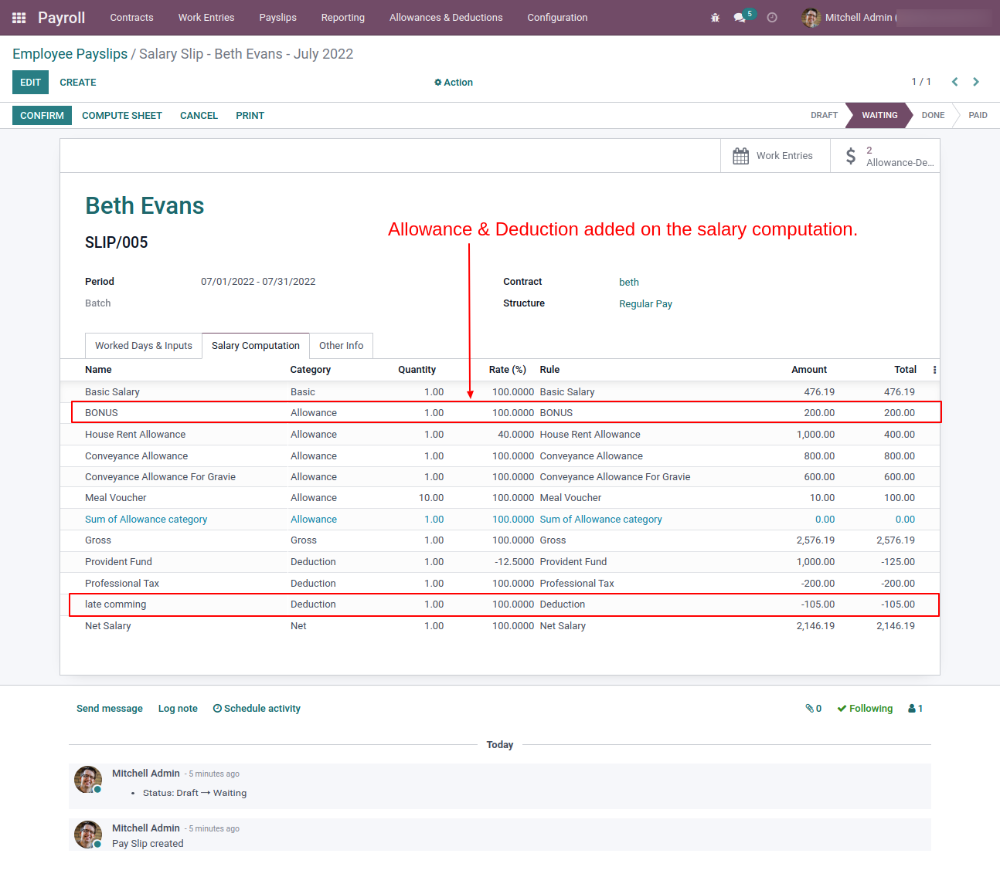
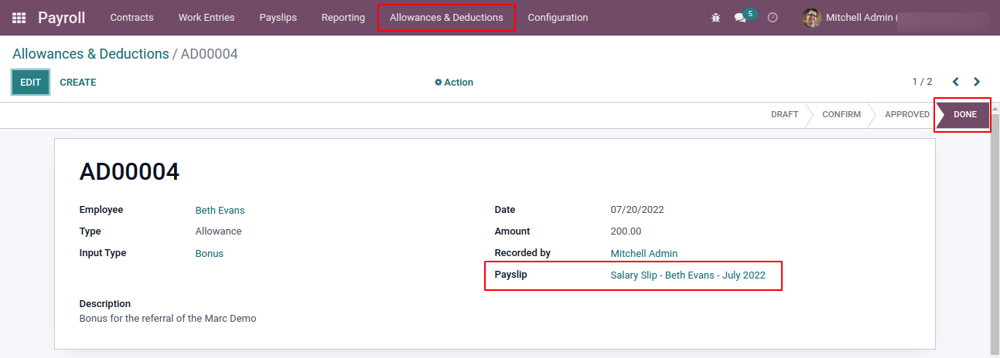
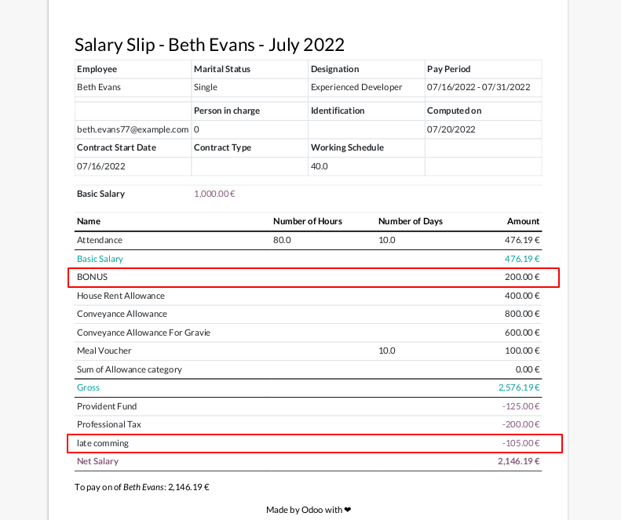

This module is used for manage the employee allowance and deduction.
Employee can also record their own allowance or deduction.
Auto calculate in employee payslip. So HR/Payroll managers do not have to enter manually on the payslip for the extra input to salary calculation.
Support With Multi Company.
Overview
On the payslip other input types, users have to define all allowance and deduction type with unique code. The code will be used into the salary rule for the employee payslip computation.

User have to create the salary rule for the allowance and deduction with respective category. Here below use the code BONUS that is defined on the above image.

From the menu Allowances & Deductions, user can enter the details. The HR Manager can approve the allowance or deduction.
Here in below image add the employee allowance for the Bonus.

Here in below image add the deduction for the employee.

When employee payslip is created it automatically adds the allowance and deduction which is in the approved stage.

When the Compute Sheet button clicks it will add the allowance and deduction on the salary computation like as shown in below image.

When HR/Payroll manager mark the payslip as done then it also change the status of the allowance and deduction to Done.

On the payslip report employee can see the allowance and deduction detail.

Contact us for Support, Customization, Implementation
You will get 45 Days free support in case of Bugs/Issue exclude data recovery.